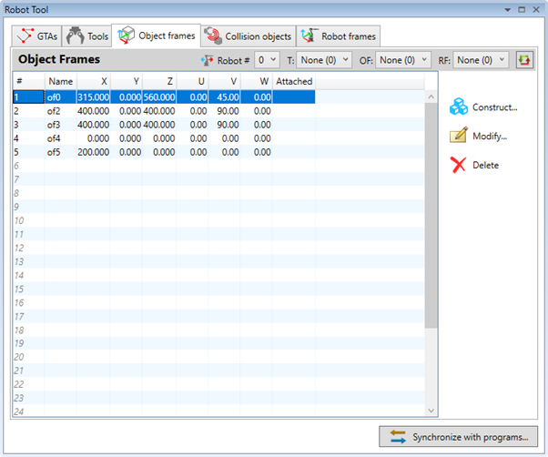
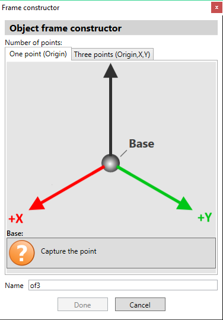
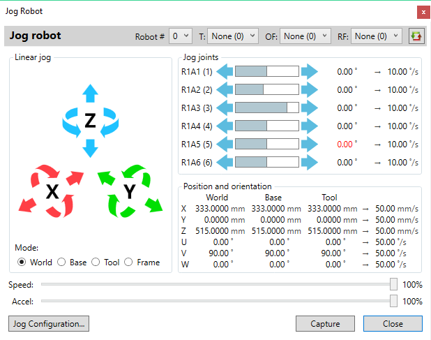
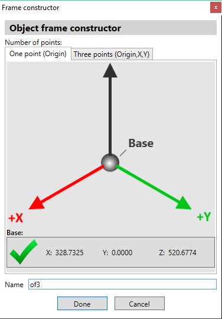
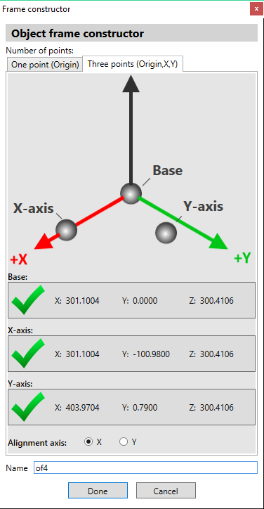
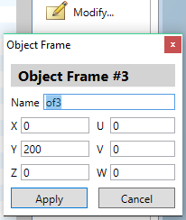

The object frame is a transformation between the global coordinate system and the coordinate system of an object that is manipulated by the robot. By using object frames it is possible for target points to be defined with respect in the coordinate system of the object. Similar to the target points it is presented as a set of 6 values:
- X, Y, Z – for the coordinates of the offset in millimeters
- U, V, W – for the angular orientation of in degrees.
An array of 31 object frame definitions is available for use to all programs. A unique name can be assigned to each object frame to be used to identify and reference it in programs.
The robot tool displays a list of already defined object frames.

The object frame can be constructed using a wizard provided by the robot tool. There are two modes of operation:
- Using single point – to define the frame as a translation only
- Using three points – in which case translation as well an orientation can be calculated.
In that mode the operator takes a single point which defines the base or the origin of the object coordinate system.

The point is captured using the robot jog tool user interface.

The operator should adjust the robot position and orientation until the tip goes as close as possible to the origin of object coordinate system.
Pressing the ‘Capture’ button accepts the point and closes the robot jog tool.
The corresponding button changes its state and displays the coordinates of the captured point.

The object frame is now ready to be stored and the operator can select a unique name for it so that it can be referenced in programs.
Pressing ‘Done’ button stores the object frame on the controller.
In this mode the operator has to capture three points as follows:
- First point should be at the base or the origin of the object coordinate system;
- Second point should on the X axis of the object coordinate system;
- Third point should on the Y axis of the object coordinate system.
Points are captured using the robot jog tool window.
The operator should adjust the robot position and orientation until the tip goes as close as possible to the desired target point.
Pressing the appropriate ‘Capture’ button accepts the point and closes the robot jog tool.
The corresponding button changes its state and displays the coordinates of the captured point.

When three points are captured the object frame is ready to be stored and the operator can select a unique name for it so that it can be referenced in programs.
It is also possible to select the alignment axis to be +X or +Y. That allows the operator to select which of these two axes is captured more accurately and should take precedence in calculations.
Pressing the ‘Done’ button stores the object frame on the controller.
By pressing
 button the operator can directly type-in a new object frame or
modify the coordinates or the name of a previously defined entry. That is
particularly useful when the orientation of the object frame needs to be
adjusted.
button the operator can directly type-in a new object frame or
modify the coordinates or the name of a previously defined entry. That is
particularly useful when the orientation of the object frame needs to be
adjusted.

Pressing the ‘Apply’ button stores the changes on the controller.
By pressing
 button the data stored in selected object frame entries will be
deleted and they will become empty.
button the data stored in selected object frame entries will be
deleted and they will become empty.